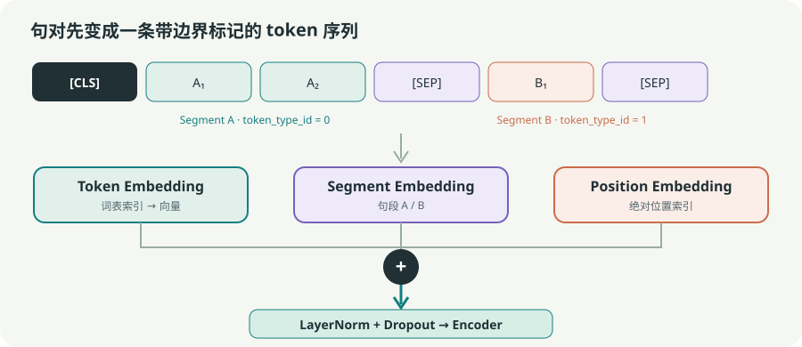

1. 原始文本怎样进入 tokenizer
tokenizer 的职责是把字符串转成模型词表中的离散 token，并为模型准备边界标记和辅助输入。对于原始英文 BERT，官方实现会先清理文本、处理空白字符；uncased 模型还会小写化并去除重音符号；随后切分标点，再把每个片段送入 WordPiece。
cased 与 uncased 模型的预处理不同：cased 模型保留大小写和重音；uncased 模型会做相应归一化。中文模型的预处理也不能直接照搬英文规则。Google 发布的 BERT 中文模型采用字符级中文切分，而其他多语言模型对非中文语言使用 WordPiece。
因此，tokenizer 不是“把空格分开的词映射成 ID”这么简单。预处理规则、词表版本、大小写配置和语言特定规则共同决定最终 token 序列。
2. WordPiece 如何切分子词
WordPiece 用固定词表中的子词单元表示输入。一个完整词若不在词表中，tokenizer 会尝试将其拆成更小的已知片段。BERT 常见实现使用 ## 标记非词首的续接片段，例如某个词可能被表示为一个起始子词和一个或多个带 ## 前缀的后续片段。
官方 BERT tokenizer 的推理阶段使用 greedy longest-match-first：从当前未处理位置开始，先尝试尽可能长的子串；若找不到词表项，就缩短候选片段，直到匹配成功。后续片段会加上 ## 前缀。如果一个词无法被完整拆分，官方实现会将整个词映射为 [UNK]，而不是保留已经匹配到的一半。
这里要区分“词表如何训练出来”与“给定词表后如何切分输入”。BERT 原论文说明使用 30,000 个 WordPiece token，但并没有在论文正文中完整规定 WordPiece 词表训练算法的全部实现细节；因此不能把某个教程中的训练伪代码直接当成 BERT 官方算法。
3. WordPiece 与 BPE 不相同
BPE（Byte Pair Encoding）最初来自压缩算法，Sennrich 等人将其用于机器翻译中的子词表示。典型 BPE 训练过程统计相邻符号对并反复合并高频 pair；推理时按学到的 merge 规则构造子词。
WordPiece 与 BPE 都属于子词建模思路，都能在固定词表中复用词根、词缀和常见字符片段，但二者的词表学习准则和具体实现并不等同。尤其不能把“BPE 每轮合并最高频 pair”写成 WordPiece 的通用训练算法。对复现 BERT 来说，应直接使用与 checkpoint 匹配的 tokenizer 文件，而不是自行猜测训练算法。
4. 特殊 token 的职责
| Token | 主要用途 | 注意事项 |
|---|---|---|
[CLS] | 序列开头；常用于分类等序列级任务的汇总位置 | 不是天然的通用句向量，通常需要任务训练 |
[SEP] | 标记片段边界；句对输入中分隔 A 与 B | 单句输入通常也会在末尾添加 |
[MASK] | 原始 MLM 预训练中使用的遮盖符号 | 一般下游输入不会主动插入它 |
[PAD] | 把不同长度样本补齐到同一 batch 长度 | 应同时设置 attention mask |
[UNK] | 表示 tokenizer 无法编码的输入片段 | 是否出现取决于 tokenizer 和词表 |
特殊 token 的字符串形式较常见，但对应的整数 ID 由具体 tokenizer 词表决定。不能把某个 uncased checkpoint 的 ID 当成所有 BERT 变体的通用常数。
5. 单句与句对的输入格式
单句输入通常组织为：
[CLS] A_1 A_2 ... A_n [SEP]句对输入通常组织为：
[CLS] A_1 ... A_m [SEP] B_1 ... B_n [SEP]tokenizer 随后会生成多组一一对齐的输入张量：
input_ids：每个 token 在当前词表中的整数索引。token_type_ids：句段标记。原始 BERT 的句对输入通常用 0 表示 A 段、1 表示 B 段；单句通常全为 0。attention_mask：常见约定中 1 表示真实 token、0 表示 padding。框架或模型封装的布尔 mask 语义可能不同，使用时应检查 API。position_ids：位置索引，常见默认值从 0 递增。

6. 三类 embedding 相加形成输入表示
对位置 i，BERT 的输入表示由 token embedding、segment embedding 和 position embedding 相加得到：
三类 embedding 的最后一维都是 hidden size H，所以可以逐元素相加。相加之后，原始 BERT 实现还执行 LayerNorm 和 dropout，再把结果送入第一层 Transformer encoder。
Token embedding 告诉模型“当前位置是什么 token”；segment embedding 告诉模型“当前位置属于哪一段”；position embedding 告诉模型“当前位置在序列中的位置”。三者是互补信号，不能把它们说成三套互相拼接的向量。
7. padding、attention mask 与截断
一个 batch 内的文本长度往往不同。padding 会把短序列补到同一长度；attention mask 则告诉模型哪些位置是真实输入、哪些位置只是补齐符号。若只补齐而不屏蔽 padding，模型就可能把补齐位置当作可用上下文。
truncation 会在超过最大长度时截断输入。句对任务还需要明确采用 longest-first、只截断一侧或滑动窗口等策略。对问答和序列标注任务，截断不仅影响模型输入，还会影响原始字符 offset 与标签位置的对齐。
8. 512 是原始 BERT 配置边界，不是 Transformer 定律
原始 BERT checkpoint 使用长度为 512 的绝对位置 embedding 配置；论文的预训练日程中，前 90% 的训练步使用长度 128，最后 10% 使用长度 512。不同 checkpoint、实现或后续模型可能使用不同的最大长度。
若把序列长度从 512 增加到 1024，标准全注意力的 T^2 分数矩阵会扩大到 4 倍。长文档任务常采用滑动窗口、分块编码与聚合，或使用局部/稀疏注意力架构；每种方法都在计算成本、跨段信息和边界效应之间做取舍。
9. 交互：用一个玩具词表观察最长匹配
下面的演示只实现单个英文预分词片段的 greedy longest-match-first，并使用一个极小的教学词表。它不包含官方 BasicTokenizer 的清洗、标点、大小写、重音和中文处理，也不代表 bert-base-uncased 的真实切分结果。
玩具 WordPiece 切分器
尝试输入 unbelievable、playing、books。词表仅包含演示用片段。
输入：unbelievable 切分：un | ##believable 说明：这是一个教学玩具词表，不是 bert-base-uncased 的真实 tokenizer 输出。
10. 检查真实 tokenizer 输出
要查看真实的 token、ID、padding 和 segment 信息，应直接调用与 checkpoint 对应的 tokenizer，而不是根据示意图手工猜 ID。以下代码使用 Hugging Face Transformers 的公开 tokenizer；首次运行通常需要下载模型文件，离线运行则需事先缓存。
from transformers import AutoTokenizer
tokenizer = AutoTokenizer.from_pretrained("bert-base-uncased")
batch = tokenizer(
[
"The bank is near the river.",
"I deposited money at the bank.",
],
padding=True,
truncation=True,
max_length=128,
return_tensors="pt",
)
for name, tensor in batch.items():
print(name, tuple(tensor.shape))
print(tokenizer.convert_ids_to_tokens(batch["input_ids"][0]))返回字段会随 tokenizer 配置和调用参数变化。对于某些模型，token_type_ids 可能不存在或不被模型使用；不要假定所有 Transformer 都接受与原始 BERT 完全相同的输入字典。
关键结论
- Tokenizer 由预处理规则、子词词表和切分算法共同定义；不同 checkpoint 不能随意混用 tokenizer。
- WordPiece 与 BPE 都是子词方法，但训练准则和具体实现不相同；BERT 推理时常用最长匹配策略。
- 原始 BERT 输入由 token、segment、position 三类同维 embedding 相加，之后再做 LayerNorm 与 dropout。
- input_ids、token_type_ids、attention_mask 与 position_ids 是不同职责的张量；ID 数值和 mask 约定应以具体 tokenizer/API 为准。
- 512 是原始 BERT checkpoint 的配置边界，不是 Transformer 的理论最大长度。
原始资料与延伸阅读
- Devlin et al., BERT. 重点：§3 Input/Output Representations、Appendix A.2。
- Google Research, BERT 官方 tokenizer 实现：BasicTokenizer、WordpieceTokenizer 与中文字符处理。
- Google Research, BERT 官方模型说明：cased/uncased、多语言和中文模型说明。
- Hugging Face, BERT model documentation：input_ids、token_type_ids、attention_mask 等输入参数。
- Sennrich et al., Neural Machine Translation of Rare Words with Subword Units, 2016：BPE 子词方法。